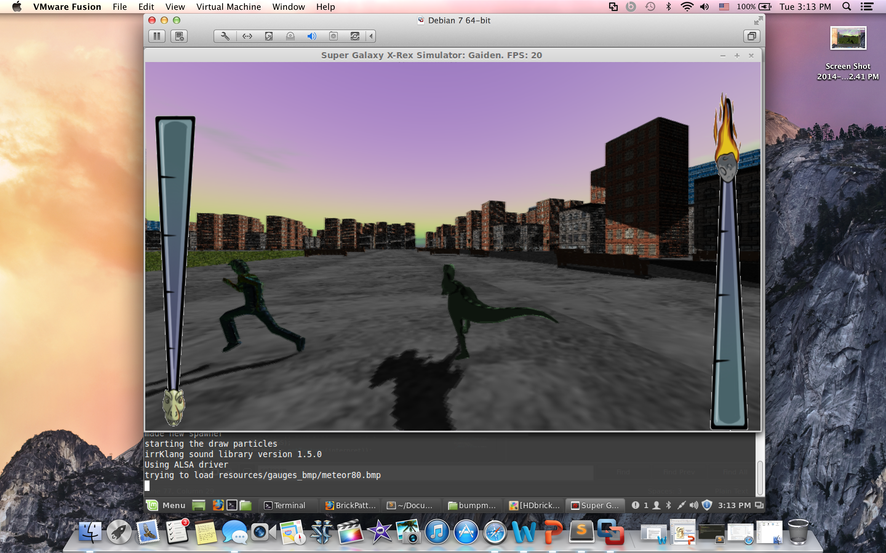
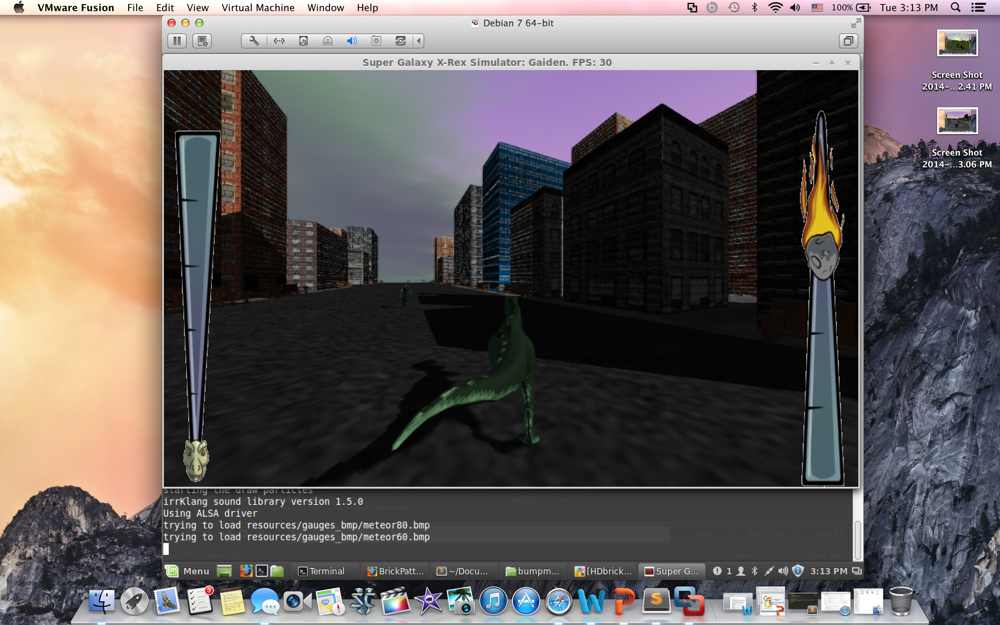
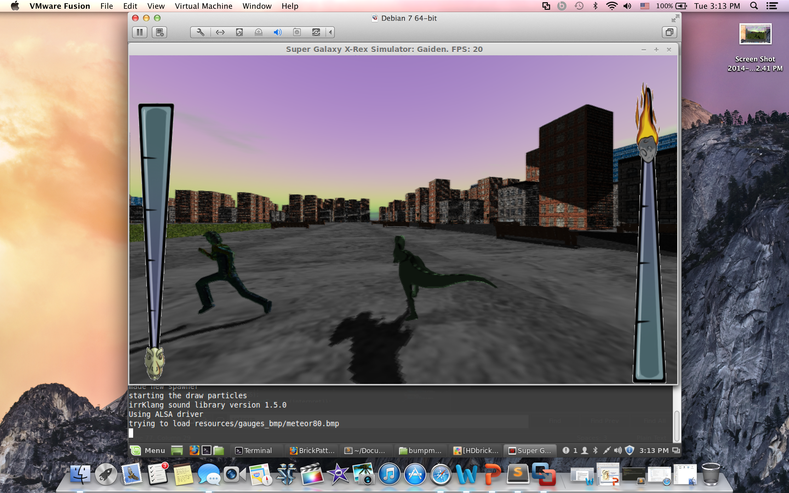
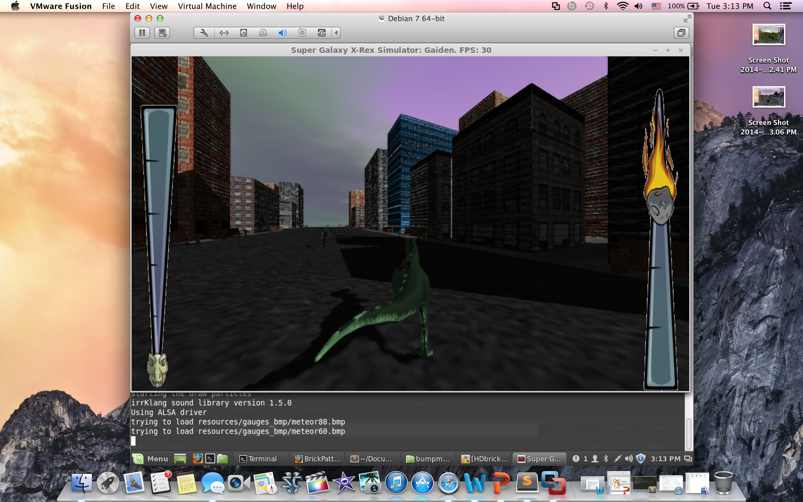
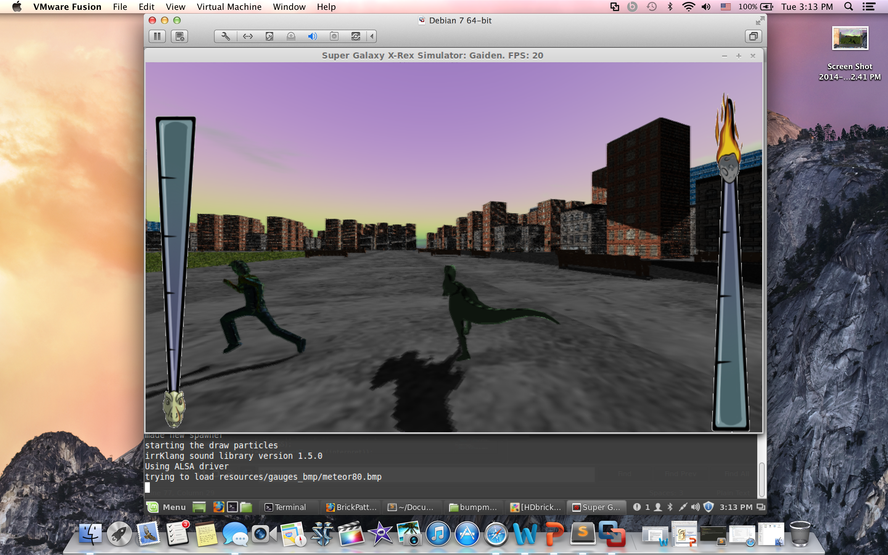
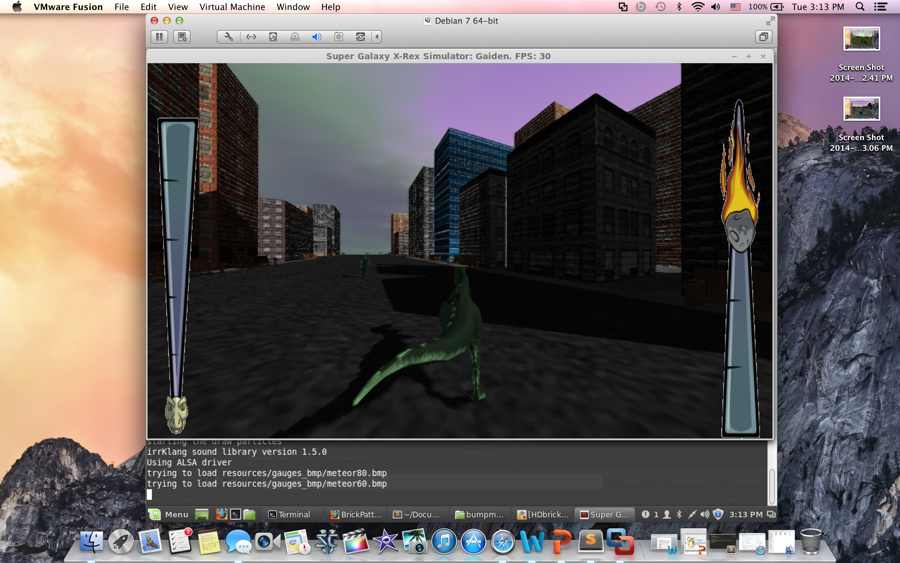

Sample Pictures
 




This game is an apocalyptic survival game. The player controls a T-Rex that starts out small and slowly grows as the player eats more and more. The entire world of this game is consumable and the only caveat is that the T-Rex has to reach a certain size before it can eat certain things. The player needs to eat enough so the meter on the left side fills to the top before the meteor-meter on the right side comes crashing down. If the player is able to do this, the T-Rex will be big enough to stop the meteor before it collides with everything on the ground! Otherwise, the meteor will destroy everything in the game world along with the T-Rex, and the player will lose.

